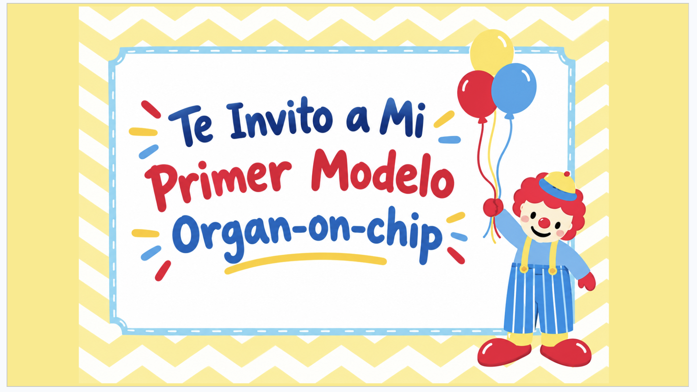

Presentación oficial
Un Organ-on-Chip de la Sustancia Negra para entender el Parkinson — explicado como una casa de juguete. 🏡
Para arrancar… 🏚️
Imaginá una casa antigua y delicada (= nuestro cerebro). Es tan frágil que no podemos abrir las paredes para ver las tuberías y los cables sin romperla.
Paso 1 🧩
En el cerebro, las neuronas no viven solas. Necesitan dos cosas del vecindario:
👉 Querían copiar ese vecindario completo — no solo las neuronas sueltas.
Paso 2 🏠
Una cajita transparente dividida en dos pisos por un suelo lleno de agujeritos (la membrana porosa). ¡Así los vecinos de arriba y abajo se mandan "notas"! 📨
Pasos 3 y 4 🧱
⚠️ Ojo: este paper NO usa "fotolitografía" — usaron un chip comercial ya funcionalizado. ¡No te confundas si te preguntan!
Paso 5 👨👩👧👦
Para parecerse a un humano de verdad usaron células humanas (varias creadas a partir de células madre). ¡Cada una con su oficio! 🏘️
| 💡 Las luces | Neuronas que dan la chispa; son las que se apagan en el Parkinson · neuronas dopaminérgicas (iPSC) |
| 👩🍳 Los cocineros | Le dan de comer a las neuronas · astrocitos |
| 👮 Los policías | Defienden el lugar · microglía |
| 👷 Los albañiles | Refuerzan los vasos sanguíneos · pericitos |
| 🧱 Las baldosas | Forman la tubería de la sangre · células endoteliales |
Paso 6 🧬
¡SÍ, totalmente! Para simular el Parkinson, echaron "basura" en el piso de arriba: cadenas de proteína dañada. (= fibrillas de α-sinucleína)
👉 Así vieron, paso a paso, cómo la casita se enfermaba igual que un cerebro con Parkinson.
Paso 7 🔍
La cajita es transparente y diminuta → usaron varios trucos sin romperla:
Todo en una 📋
| Modelo | Human Substantia Nigra Brain-Chip (Nature Comms, 2021) |
| Objetivo | Estudiar el Parkinson y la rotura de la barrera (BBB) |
| Diseño | Casita de 2 pisos + suelo con agujeritos (membrana porosa) |
| Material | Plástico PDMS + "pegamento" de proteínas (colágeno, fibronectina, laminina) |
| Construcción | Chip comercial Chip-S1® de Emulate + tratamiento UV |
| Vecinos | Luces, cocineros, policías, albañiles y baldosas (5 células humanas) |
| Enfermedad | Sí → Parkinson, echando "basura" (α-sinucleína) |
| Herramientas | Linternas de colores, prueba de fugas, análisis de secreciones y chequeo de baterías |
¡Y eso es todo! 🙌
¿Preguntas sobre la casita? ¡Charlemos! 🧠✨